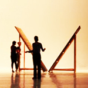

| NEWS | ABOUT | EXHIBITION | EVENT | ARTIST | LINK | CONTACT/IMPRINT | PUBLICATION | tamtamART TAIWAN |
BERLIN tamtamART tamtamART, founded in Berlin in early 2009, focuses on cross-national and cross-disciplinary |
|---|
 |
傅雅雯YA-WEN FU is a media artist based in Germany and Taiwan. She received her Meisterschüler and Diplom degrees in Media Art from the Academy of Fine Arts Leipzig, Germany, and her Bachelor of Fine Arts from the National Taiwan University of Arts in Taipei, Taiwan. Since 2009, she has served as the director of tamtamART TAIWAN/Berlin, a platform for curatorial and interdisciplinary collaboration. Her curatorial practice includes exhibitions such as Elsewhere is Nowhere (National Taiwan Museum of Fine Arts 2016 and Kunsthalle Exnergasse, Vienna, 2017), and f(r)iction in between (Werkschauhalle – Leipziger Baumwollspinnerei, Germany, 2018). |
|---|---|
 |
洪韵婷YUN-TING HUNG In 2006, she completed her master’s degree in Fine Arts at the National Taiwan University of Arts. In 2010, she was awarded the “Excellent Artist” diploma from the Dresden University of Fine Arts under the mentorship of Prof. Eberhard Bosslet. She is currently an associate professor in the Department of Fine Arts at Chang Jung Christian University. Her recent artistic and curatorial work engages with contemporary social and cultural phenomena, particularly focusing on themes of speed, mobility, and the concept of non-places in everyday life. Her works have been exhibited internationally, including in New York, Paris, Berlin, Leipzig, Dresden, Poznań, Sderot, and Nakanojō. |
2007-2013 |
|---|
| |
傅雅雯YA-WEN FU is a media artist based in Germany and Taiwan and has her Meisterschüler and Diplom in Media Arts from the Academy of Fine Arts Leipzig Germany. and her Bachelor Fine Arts is from the National Taiwan University of Arts, Taipei, Taiwan. She is a Media Art artist and having curatorial experiences, she has joined tamtamART art association as a director since 2009. |
|---|---|
|
洪韵婷YUN-TING HUNG born in Taiwan, works and lives in Kaohsiung, Taiwan. She received her degree MFA in 2016 after completing postgraduate studies at National Taiwan University of Arts, followed by the Meisterstudium at Kunsthochschule fuer Bildenden Kuenste in Dresden, supervised by Prof. Eberhard Bosslet. Currently she works as an associate professor at the Department of Fine Arts at Chang Jung Christian University in Tainan. In both art-making and curatorial practice, she has recently focused on current social and cultural characteristics such as speed, mobility and non-place in daily life. |
|  | 黃玄HUANG HSUAN born 1983 in Taiwan. She starts learning the violin when she was young. In 2006 she decided to come and work thetheater in Germany, and she entered the class of stage design with Prof. Hartmut Mayer in the Berlin University of the Arts (udk). |
Weichsel Straße 8, 10247 Berlin- Friedrichshain, Germany
Best:1024x768px" / copyright© tamtamART All rights reservered.